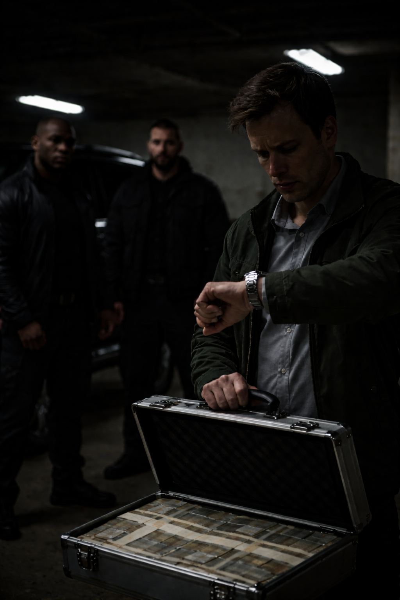
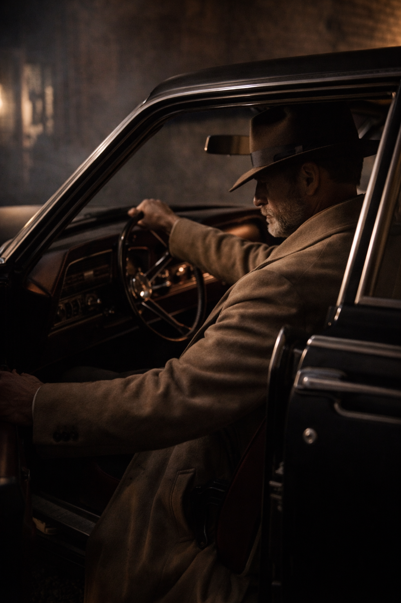
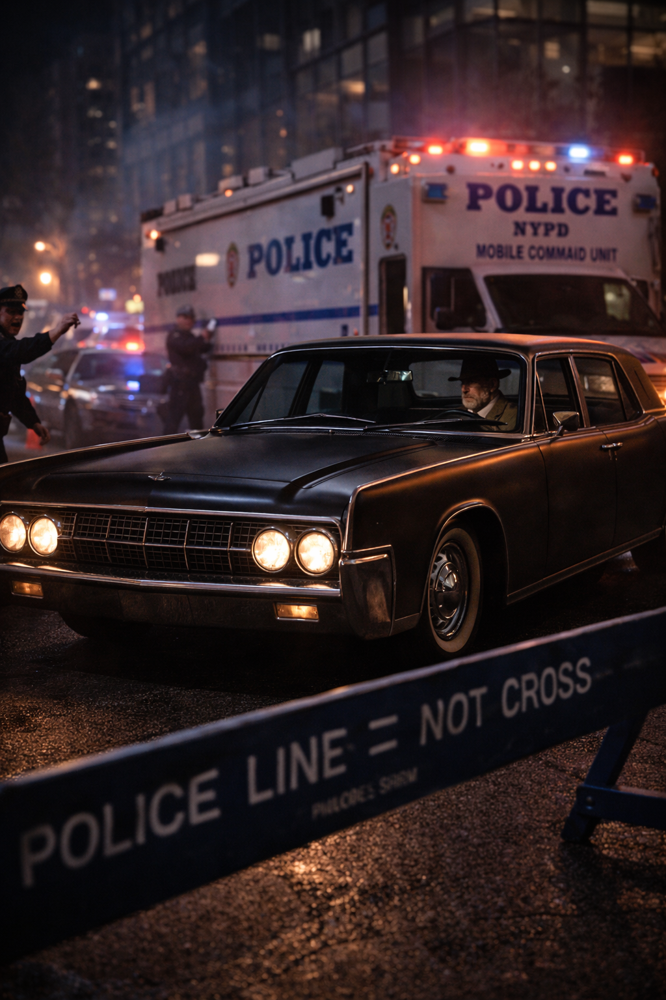

The Janitor’s Kit
Mid-century silhouette · heavy fabrics · no shine
The Shark of Wall Street · Dossier
Mr. Miller — The Detective

The city outside was drowning in a digital storm, but inside The Abattoir, the year was stuck permanently in 1955.
The air smelled of aged beef, cigar smoke, and rain-soaked wool. There was no Wi-Fi. The booths were red leather, deep and high-backed, designed for conversations that shouldn’t be recorded.

Mr. Miller sat in the corner booth, his back to the wall, face obscured by the shadow of a wide-brimmed fedora hanging on the coat hook beside him. On the table: a bone-in ribeye, rare. A glass of bourbon, neat. A police scanner, modified with a vacuum tube amplifier, hissing softly with static.
Miller sliced the steak. His movements were surgical. No wasted energy. He ate with the patience of a man who knew that digestion was the only part of the job you couldn’t rush.
“Central, we have a silent alarm at Obsidian Tower. Zone 98. Possible glitch.”
Miller didn’t look up. He took a sip of bourbon. Glitches didn’t happen in Zone 98.
“Central, thermal sensors are spiking. We have a heat signature moving inside the server room. It’s… it’s fast.”
Miller stopped chewing. He wiped his mouth with a linen napkin.
“Zero,”
he whispered to the empty booth. He knew the kid was good. But he also knew the Obsidian Tower wasn’t just a bank; it was a mousetrap. And the mouse had just taken the cheese.
Miller sighed. It was a heavy, disappointed sound. He reached into his pocket and pulled out a roll of cash — thick, non-sequential bills. He peeled off three hundreds and left them under the glass.
He stood up and grabbed his coat. As he slid his arms into the beige cashmere, he checked his reflection in the mirror behind the bar. He didn’t look at his face. He checked the knot of his tie. He checked the hang of the trench coat to ensure the Thompson submachine gun rigged under his left arm didn’t print against the fabric. He put on the fedora, tilting the brim down until the world was just a narrow strip of view.
The car waited in the alley. A 1964 Lincoln Continental, matte black, with suicide doors and an engine that sounded like a tectonic plate shifting.
Miller slid into the driver’s seat. He didn’t use a GPS. He knew the grid. He turned the key. The V8 roared to life, shaking the puddles on the asphalt.

He pulled out into traffic, the heavy steel frame of the Lincoln parting the sea of plastic electric smart-cars like an icebreaker. He turned up the volume on the dashboard scanner.
“NYPD here. We are five minutes out. Prepare tear gas canisters.”
Miller shook his head. “Wrong tool, son,” he muttered. He reached under the dashboard and flipped a switch. The Lincoln’s plates rotated, swapping from a registered NY plate to a government-issue “Diplomatic” tag. He floored the accelerator. The Lincoln surged forward, running a red light with majestic indifference. He wasn’t driving to arrest a criminal. He was driving to save the police from getting slaughtered.
The scene at the Obsidian Tower was a mess. Red and blue lights strobing. Officers shouting. Chaos. Miller drifted the heavy Lincoln around the police barricade, ignoring the officer waving a flashlight at him, and brought the car to a stop right next to the Mobile Command Unit. He killed the engine. The silence inside the car was absolute.
He took a final drag of his cigarette, exhaled a plume of blue smoke against the windshield, and opened the door.

He stepped out into the steam rising from the subway grate, the trench coat billowing around him. He walked toward NYPD, who was busy shouting orders about gas. Miller adjusted his cuffs. He wasn’t hurrying. Panic was for people who didn’t have a plan.
“I wouldn’t do that, Captain,”
Miller drawled, his voice cutting through the siren wails. NYPD turned.
And the Detective went to work.
The Janitor’s Kit — Scene Objects